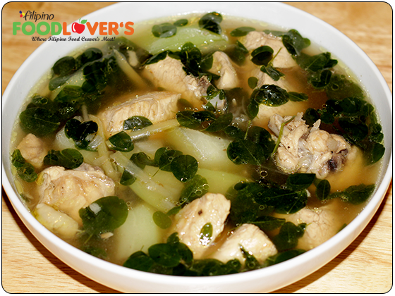

Tinolang Manok
Tinolang Manok or Ginger Chicken Soup is another dish that most Filipinos would rave about.
This dish definitely ranks high when it comes to Filipino soups for many reasons.
First and foremost, it is very tasty and satisfying, and it is so easy to make no wonder it's seen often on menus across the Philippines.

Tinolang Manok has many variations; the most common one is the combination of green papaya, and chili leaves, but my version is a bit different and in my humble opinion I think it tastes better.
My version is a combination of Chayote (sayote) and Horseradish Leaves (dahon ng malunggay).
Here where I live fresh malunggay doesn't exist.
We can only buy frozen, but for this recipe it's plenty good.
Okay let's see the recipe then, shall we?
Ingredients:
- 2 Halves of chicken breast (skin on & boned in) - cut into bite size pieces
- Cup of ginger – peeled and julienned
- 4 Cloves of garlic – peeled & smashed
- 1 Medium size onion – sliced thinly
- 2 Chayote – peeled and quartered
- ½ Package of frozen horseradish leaves – fresh is better if available?
- ½ Teaspoon ground black pepper
- 2 Tablespoons fish sauce – (patis)
- 2 Chicken bouillons – (chicken cubes)
- 8-10 Cups of water, if you choose chicken stock, then omit the bouillon cubes
- 3 Tablespoons cooking oil – (I used canola oil)
Cooking Process:
- Heat oil and sautée garlic until golden brown.
- Add onions and let it cook for 2 minutes.
- Add cut-up chicken breast and let it brown.
- Add bouillon and fish sauce, stir, cover, and allow it to simmer for 2 minutes.
- Add ginger, stir well, cover, and let it cook for 1 minute.
- Add the water or chicken stock, bring to a boil, lower the heat, and allow to simmer for 15 minutes.
- After 15 minutes add the horseradish leaves and chayote, bring to a boil, and let it cook for 5 minutes or until chayote are tender.
- Adjust the taste by adding more fish sauce or salt and black pepper if needed.
- That’s it you’re done.
- Serve with white steamed rice and fish sauce/Calamansi combination for dipping sauce.